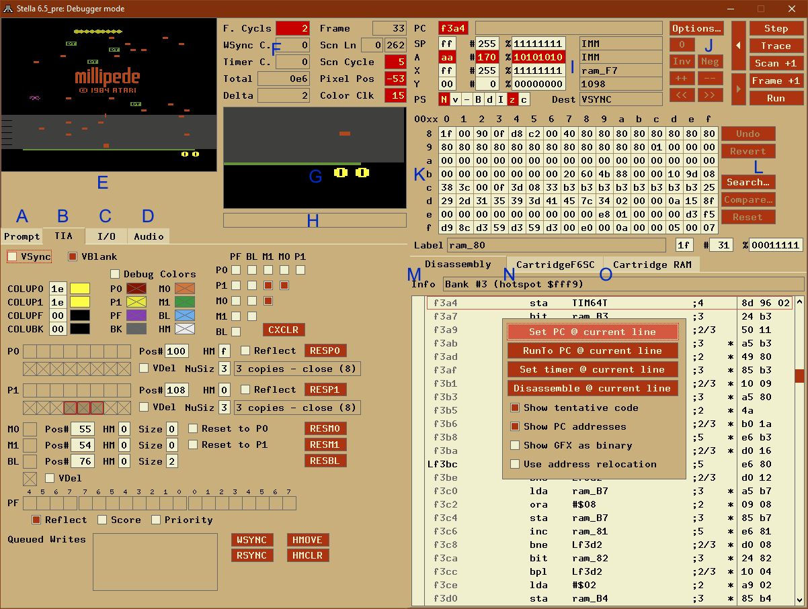
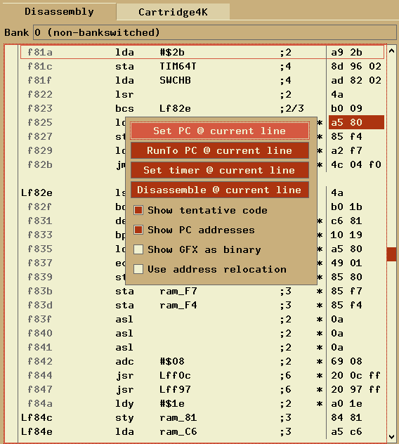

The debugger in Stella may never be complete, as we're constantly adding new features requested by homebrew developers. However, even in its current form it's still quite powerful, and is able to boast at least one feature that no other 2600 debugger has; it's completely cross-platform.
Here's a (non-comprehensive) list of what the debugger can do so far:
Pressing ` (aka backtick, backquote, grave accent) toggles the debugger on & off. When you exit the debugger, the emulation resumes at the current program counter, and continues until either a breakpoint/trap is hit, or the ` key is pressed again.
The main debugger window will look similar to the following (note that the letters here are for reference in the document below; they aren't actually present in the debugger):

For space reasons, the Prompt, TIA, I/O and Audio displays are split into 4 tabs, only one of which is visible at a time. You can use the mouse or keyboard to select which tab you want to view. Control/Cmd + Tab cycles between tabs from left-to-right, Shift + Control/Cmd + Tab cycles right-to-left. Pressing Tab (or Shift + Tab) cycles between widgets in the current tab (except for in the Prompt Tab, where 'tab' is used for something else).
You can also enter the debugger at emulator startup by use the 'debug' command on the command line, or alternatively within the ROM launcher in 'Power-on options':
; will enter the debugger before any instructions run stella -debug mygame.bin ; alternatively, you can use 'break' to accomplish the same thing ; $fffc is the 6502/6507 init vector. This command will break and enter the ; debugger before the first 6507 instruction runs, so you can debug the ; startup code: stella -break "*($fffc)" mygame.bin
Using the ` key will always enter the debugger at the end of the frame (for NTSC games usually scanline 262). This is because Stella only checks for keystrokes once per frame. Once in the debugger, you can control execution by stepping one instruction, scanline, or frame at a time (or more than one at a time, using commands in the prompt). You can also set breakpoints or traps, which will cause the emulator to enter the debugger when they are triggered, even if it happens in mid-frame.
The location of this file will depend on the OS as follows:
| Linux/Unix | ~/.stella/autoexec.script |
| Macintosh | ~/Library/Application Support/Stella/autoexec.script |
| Windows | %APPDATA%\Stella\autoexec.script
or _BASEDIR_\autoexec.script (if a file named 'basedir.txt' exists in the application directory containing the full pathname for _BASEDIR_) |
Note that all files are only accessed if you enter the debugger at least once during a program run. This means you can create these files, and not worry about slowing down emulation unless you're actively using the debugger.
There are some buttons on the right top that always show up no matter which tab you are looking at. This is because these are the ones that are most frequently used.
The larger button at the left top (labeled '<') performs the rewind operation, which will undo the previous Step/Trace/Scan/Frame... advance, the smaller button at the left bottom (labeled '>') performs the unwind operation, which will undo the previous rewind operation. The rewind buffer is 100 levels deep by default, the size can be configured e.g. in the Developer Settings - Time Machine dialog.
The other operations are Step, Trace, Scan+1, Frame+1 and Exit (debugger).
You can also use the buttons from anywhere in the GUI via hotkeys.
| Key | Function |
|---|---|
| Control-s | Step |
| Control-t | Trace |
| Control-L | Scan+1 |
| Control-f | Frame+1 |
| Alt-Left arrow | Rewind 1 |
| Shift-Alt-Left arrow | Rewind 10 |
| Alt-Down arrow | Rewind all |
| Alt-Right arrow | Unwind 1 |
| Shift-Alt-Right arrow | Unwind 10 |
| Alt-Up arrow | Unwind all |
| Backquote (`) | Exit |
To the left of the global buttons, you find the "Options..." button.

This opens the Options Menu which is described in detail in the User's Guide.
The debugger tracks changes to the CPU, TIA and RIOT registers and RAM by displaying changed locations or registers with a red background after each step, trace, scanline, or frame advance. This sounds simple, and it is, but it's also amazingly useful.
One clarification about the change tracking: it only tracks when values have changed. If the ROM writes a value into a RAM location that already contained the same value, that's not considered a change (old value was $whatever, new value is the same, so nothing got tracked). This may change in a future version of Stella.
This is a command-line interface, similar to the DOS DEBUG command or Supermon for the C=64.
Editing keys work about like you'd expect them to in Windows, but many Bash-style commands are also supported:
| Key | Function |
|---|---|
| Home | Move cursor to beginning of line |
| End | Move cursor to end of line |
| Delete | Remove character to right of cursor |
| Backspace | Remove character to left of cursor |
| Control-a | Same function as 'Home' |
| Control-e | Same function as 'End' |
| Control-d | Same function as 'Delete' |
| Control-k | Remove all characters from cursor to end of line |
| Control-u | Remove all characters from cursor to beginning of line |
| Control-w | Remove entire word to left of cursor |
| Shift-PgUp | Scroll up through previous commands one screen/page |
| Shift-PgDown | Scroll down through previous commands one screen/page |
| Shift-Up | Scroll up through previous commands one line |
| Shift-Down | Scroll down through previous commands one line |
| Shift-Home | Scroll to beginning of commands |
| Shift-End | Scroll to end of commands |
You can also scroll with the mouse. Copy and paste is not yet supported.
To see the available commands, enter "help". For extended help, type "help cmd", where 'cmd' is the command you wish to know about. The available commands are listed in Prompt Commands at the end of this section. Bash-style tab completion is supported for commands, labels and functions (see below).
For now, there are some functions that only exist in the prompt. We intend to add GUI equivalents for all (or almost all?) of the prompt commands in future releases. People who like command prompts will be able to use the prompt, but people who hate them will have a fully functional debugger without typing (or without typing much, anyway).
Note: unlike the rest of the UI, whatever is shown in the prompt will not be updated during debugging and thus eventually become "stale". You can update it just by re-running the relevant commands in the prompt.
While entering a command, label or function, you can type a partial name and press the Tab key to attempt to auto-complete it. If you've ever used "bash", this will be immediately familiar. If not, try it: load up a ROM, go to the debugger, type "g" (but don't press Enter), then hit Tab. The "g" will change to "gfx" (since this is the only built-in command starting with a "g"). If there are multiple possible completions (try with "tr" instead of "g"), you'll see a list of them, and your partial name will be completed as far as possible. After the first character, the autocompletion considers all characters in the right order as a match (e.g. "twf" will be completed to "trapwriteif").
Tab completion works on all labels: built-in, loaded from a symbol file, or set during debugging with the "define" command. It also works with built-in functions and those defined with the "function" command, but it doesn't (yet) work on filenames.
Almost every command takes a value: the "a" command takes a byte to stuff into the accumulator, the "break" command takes an address to set/clear a breakpoint at. These values can be as a hex constant ($ff, $1234), or as complex as "the low byte of the 16-bit value located at the address pointed to by the binary number 1010010110100101" (which would be "@<\1010010110100101"). You can also use registers and labels in expressions.
You can use arithmetic and boolean operators in expressions. The syntax is very C-like. The operators supported are:
+ - * / (add, subtract, multiply, divide: 2+2 is 4)
% (modulus/remainder: 3%2 is 1)
& | ^ ~ (bitwise AND, OR, XOR, NOT: 2&3 is 2)
&& || ! (logical AND, OR, NOT: 2&&3 is 1, 2||0 is 0)
( ) (parentheses for grouping: (2+2)*3 is 12)
* @ (byte and word pointer dereference: *$80 is the byte stored
at location $80)
[ ] (array-style byte pointer dereference: $80[1] is the byte
stored at location ($80+1) or $81)
< > (prefix versions: low and high byte. <$abcd is $cd)
== < > <= >= !=
(comparison: equality, less-than, greater-than, less-or-equals,
greater-or-equals, not-equals)
<< >> (bit shifts, left and right: 1<<1 is 2, 2>>1 is 1)
Division by zero is not an error: it results in zero instead.
None of the operators change the values of their operands. There are no variable-assignment or increment/decrement operators. This may change in the future, which is why we used "==" for equality instead of just "=".
The bitwise and logical boolean operators are different in that the bitwise operators operate on all the bits of the operand (just like AND, ORA, EOR in 6502 asm), while the logical operators treat their operands as 0 for false, non-zero for true, and return either 0 or 1. So $1234&$5678 results in $1230, whereas $1234&&$5678 results in 1. This is just like C or C++...
Like some programming languages, the debugger uses prefixed characters to change the meaning of an expression. The prefixes are:
'*'Dereference a byte pointer. "*a" means "the byte at the address that the A register points to". If A is 255 (hex $ff), the result will be the value currently stored in memory location 255. This operator will be very familiar to you if you're a C or C++ developer. It's equivalent to the PEEK() function in most 8-bit BASICs. Also, the debugger supports array-like byte dereferences: *address can be written as address[0]. *(address+1) can be written as address[1], etc.
'@'Dereference a pointer to a word. This is just like the "*" byte deref, except it refers to a 16-bit value, occupying 2 locations, in low-byte-first format (standard for the 6507).
The following are equivalent:
@address
*address+$100**(address+1)
address[0]+#256*address[1]
(TODO: add (indirect),y and (indirect,x) syntax)
'<'Take the low byte of a 16-bit value. This has no effect on an 8-bit value: "a" is equal to "<a". However, "<$1234" equals "$34".
'>'Take the high byte of a 16-bit value. For 8-bit values such as the Accumulator, this will always result in zero. For 16-bit values, "<$1234" = "$12".
'#'Treat the input as a decimal number.
'$'Treat the input as a hex number.
'\'Treat the input as a binary number.
These only have meaning when they come before a number, not a label or a register. "\1010" means 10 decimal. So do "$0a" and "#10". "a" by itself is always the Accumulator, no matter what the default base is set to.
If you don't specify any number base prefix, the number is assumed to be in the default base. When you first start Stella, the default base is 16 (hexadecimal). You can change it with the "base" command. If you want to change the default base to decimal permanently, you can put a
base #10
command in your "autoexec.script" file (for details
see Startup).
Remember, you can use arbitrarily complex expressions with any command that takes arguments.
A breakpoint is a "hotspot" in your program that causes the emulator to stop emulating and jump into the debugger. You can set as many breakpoints as you like. The command is "break xx" where xx is any expression. If you've created a symbol file, you can use labels.
Example: you've got a label called "kernel". To break there, the command is "break kernel". After you've set the breakpoint, exit the debugger ("quit" or click the Exit button). The emulator will run until it gets to the breakpoint, then it will enter the debugger with the Program Counter pointing to the instruction at the breakpoint.
Breakpoints happen *before* an instruction is executed: the instruction at the breakpoint location will be the "next" instruction.
To remove a breakpoint, you just run the same command you used to set it. In the example, "break kernel" will remove the breakpoint. The "break" command can be thought of as a *toggle*: it turns the breakpoint on & off, like a light switch.
You could also use "clearbreaks" to remove all the breakpoints. Also, there is a "listbreaks" command that will list them all.
A conditional breakpoint causes the emulator to enter the debugger when some arbitrary condition becomes true. "True" means "not zero" here: "2+2" is considered true because it's not zero. "2-2" is false, because it evaluates to zero. This is exactly how things work in C and lots of other languages, but it might take some getting used to if you've never used such a language.
Suppose you want to enter the debugger when the Game Reset switch is pressed. Looking at the Stella Programmers' Guide, we see that this switch is read at bit 0 of SWCHB. This bit will be 0 if the switch is pressed, or 1 otherwise.
To have an expression read the contents of an address, we use the dereference operator "*". Since we're looking at SWCHB, we need "*SWCHB".
We're only wanting to look at bit 0, so let's mask off all the other bits: "*SWCHB&1". The expression now evaluates to bit 0 of SWCHB. We're almost there: this will be 1 (true) if the switch is NOT pressed. We want to break if it IS pressed...
So we invert the sense of the test with a logical NOT operator (which is the "!" operator): !(*SWCHB&1). The parentheses are necessary as we want to apply the ! to the result of the &, not just the first term (the "*SWCHB").
"breakif !(*SWCHB&1)" will do the job for us. However, it's an ugly mess of letters, numbers, and punctuation. We can do a little better:
"breakif { !(*SWCHB & 1 ) }" is a lot more readable, isn't it? If you're going to use readable expressions with spaces in them, enclose the entire expression in curly braces.
Remember that Stella only checks for input once per frame, so a break condition that depends on input (like SWCHB) will always happen at the end of a frame. This is different from how a real 2600 works, but most ROMs only check for input once per frame anyway.
Conditional breaks appear in "listbreaks", numbered starting from zero. You can remove a cond-break with "delbreakif number", where the number comes from "listbreaks" or by entering the same conditional break again.
Any time the debugger is entered due to a trap, breakpoint, or conditional break, the reason will be displayed in the Breakpoint/Trap Status area.
There is one annoyance about complex expressions: once we remove the conditional break with "delbreakif" or "clearbreaks", we'd have to retype it (or search backwards with the up-arrow key) if we wanted to use it again.
We can avoid this by defining the expression as a function, then using "breakif function_name":
function gameReset { !(*SWCHB & 1 ) }
breakif gameReset
Now we have a meaningful name for the condition, so we can use it again. Not only that: we can use the function as part of a bigger expression. Suppose we've also defined a gameSelect function that evaluates to true if the Game Select switch is pressed. We want to break when the user presses both Select and Reset:
breakif { gameReset && gameSelect }
User-defined functions appear in "listfunctions", which shows the label and expression for each function. Functions can be removed with "delfunction label", where the labels come from "listfunctions".
Stella has some pre-defined functions for use with the "breakif" command. These allow you to break and enter the debugger on various conditions without having to define the conditions yourself.
Built-in functions and pseudo-registers always start with an _ (underscore) character. It is suggested that you don't start labels in your game's source with underscores, if you plan to use them with the Stella debugger.
| Function | Definition | Description |
|---|---|---|
| _joy0left | !(*SWCHA & $40) | Left joystick moved left |
| _joy0right | !(*SWCHA & $80) | Left joystick moved right |
| _joy0up | !(*SWCHA & $10) | Left joystick moved up |
| _joy0down | !(*SWCHA & $20) | Left joystick moved down |
| _joy0button | !(*INPT4 & $80) | Left joystick button pressed |
| _joy1left | !(*SWCHA & $04) | Right joystick moved left |
| _joy1right | !(*SWCHA & $08) | Right joystick moved right |
| _joy1up | !(*SWCHA & $01) | Right joystick moved up |
| _joy1down | !(*SWCHA & $02) | Right joystick moved down |
| _joy1button | !(*INPT5 & $80) | Right joystick button pressed |
| _select | !(*SWCHB & $02) | Game Select pressed |
| _reset | !(*SWCHB & $01) | Game Reset pressed |
| _color | *SWCHB & $08 | Color/BW set to Color |
| _bw | !(*SWCHB & $08) | Color/BW set to BW |
| _diff0b | !(*SWCHB & $40) | Left difficulty set to B (easy) |
| _diff0a | *SWCHB & $40 | Left difficulty set to A (hard) |
| _diff1b | !(*SWCHB & $80) | Right difficulty set to B (easy) |
| _diff1a | *SWCHB & $80 | Right difficulty set to A (hard) |
Don't worry about memorizing them all: the Prompt "help" command will show you a list of them.
These "registers" are provided for you to use in your conditional breaks. They're not registers in the conventional sense, since they don't exist in a real system. For example, while the debugger keeps track of the number of scanlines in a frame, a real system would not (there is no register that holds 'number of scanlines' on an actual console).
| Function | Description |
|---|---|
| _bank | Currently selected bank |
| _cclocks | Color clocks on a scanline |
| _cycleshi | Higher 32 bits of number of cycles since emulation started |
| _cycleslo | Lower 32 bits of number of cycles since emulation started |
| _fcount | Number of frames since emulation started |
| _fcycles | Number of cycles since frame started |
| _icycles | Number of cycles of last instruction |
| _scan | Current scanline count |
| _scycles | Number of cycles in current scanline |
| _vblank | Whether vertical blank is enabled (1 or 0) |
| _vsync | Whether vertical sync is enabled (1 or 0) |
_scan always contains the current scanline count. You can use this to break your program in the middle of your kernel. Example:
breakif _scan==#64
This will cause Stella to enter the debugger when the TIA reaches the beginning of the 64th scanline.
_bank always contains the currently selected bank. For 2K or 4K (non-bankswitched) ROMs, it will always contain 0. One useful use is:
breakif { pc==myLabel && _bank==1 }
This is similar to setting a regular breakpoint, but it will only trigger when bank 1 is selected.
A watch is an expression that gets evaluated and printed before every prompt. This is useful for e.g. tracking the contents of a memory location while stepping through code that modifies it.
You can set up to 10 watches (in future the number will be unlimited). Since the expression isn't evaluated until it's used, you can include registers: "watch *y" will show you the contents of the location pointed to by the Y register, even if the Y register changes.
The watches are numbered. The numbers are printed along with the watches, so you can tell which is which. To delete a watch use the "delwatch" command with the watch number (1 to whatever). You can also delete them all with the "clearwatches" command.
Note that there's no real point in watching a label or CPU register without dereferencing it: Labels are constants, and CPU registers are already visible in the CPU Registers widget
A trap is similar to a breakpoint, except that it catches accesses to a memory address, rather than specific location in the program. They're useful for finding code that modifies TIA registers or memory.
Traps can also combined with a condition ("trapif"). If an access to a memory address is caught, the condition is evaluated additionally. Only if the condition is true too, the emulations stops. For details about conditions see Conditional Breaks described above.
An example: you are debugging a game, and you want to stop the emulation and enter the debugger whenever RESP0 is strobed. You'd use the command "trap RESP0" to set the trap, then exit the debugger. The emulator will run until the next time RESP0 is accessed (either read or write). Once the trap is hit, you can examine the TIA state to see what the actual player 0 position is, in color clocks (or you can in the future when we implement that feature in the TIA dump!)
Unlike breakpoints, traps stop the emulation *after* the instruction that triggered the trap. The reason for this is simple: until the instruction is executed, the emulator can't know it's going to hit a trap. After the trap is hit, the instruction is done executing, and whatever effects it may have had on e.g. the TIA state have already happened... but we don't have a way to run the emulated VCS in reverse, so the best we can do is stop before the next instruction runs.
Traps come in two varieties: read access traps and write access traps. It is possible to set both types of trap on the same address (that's what the plain "trap" command does). To set a read or write only trap, use "trapread(if)" or "trapwrite(if)".
All traps appear in "listtraps", numbered starting from zero. You can remove a trap with "deltrap number", where the number comes from "listtraps" or by entering the identical trap again. You can get rid of all traps at once with the "cleartraps" command.
Stella offers several commands to save your work inside the debugger for later re-use.
Note: While "save" is ROM specific, you can also create a file called "autoexec.script" which will be loaded when the debugger starts, no matter what ROM you have loaded.
See Startup for details.
This will be automatically loaded the next time your start the debugger. From there on, you can continue analyzing the ROM and then use "saveconfig" again to update the configuration. You can also use "loadconfig" to load it manually.
Note that this is not tested for multi-banked ROMs.
Note that this currently only works for single banked ROMs. For larger ROMs, the created disassembly is incomplete.
saverom: If you have manipulated a ROM, you can save it with "saverom". The file is named "<rom_filename>.a26".
saveses: The "saveses" command dumps the whole prompt session into a file named "<YYYY-MM-DD_HH-mm-ss>.txt". So you can later lookup what you did exactly when you were debugging at that time.
savestate: This command works identical to the save state hotkey (F9) during emulation. Any previously saved state can be loaded with "loadstate" plus the slot number (0-9).
Type "help" to see this list in the debugger.
Type "help 'cmd'" to see extended information about the given command.
a - Set Accumulator to <value>
base - Set default number base to <base> (bin, dec, hex)
break - Set/clear breakpoint at <address>
breakif - Set/clear breakpoint on <condition>
c - Carry Flag: set (0 or 1), or toggle (no arg)
cheat - Use a cheat code (see manual for cheat types)
clearbreaks - Clear all breakpoints
clearconfig - Clear Distella config directives [bank xx]
clearsavestateifs - Clear all savestate points
cleartraps - Clear all traps
clearwatches - Clear all watches
cls - Clear prompt area of text
code - Mark 'CODE' range in disassembly
colortest - Show value xx as TIA color
d - Decimal Mode Flag: set (0 or 1), or toggle (no arg)
data - Mark 'DATA' range in disassembly
debugcolors - Show Fixed Debug Colors information
define - Define label xx for address yy
delbreakif - Delete conditional breakif <xx>
delfunction - Delete function with label xx
delsavestateif - Delete conditional savestate point <xx>
deltrap - Delete trap <xx>
delwatch - Delete watch <xx>
disasm - Disassemble address xx [yy lines] (default=PC)
dump - Dump data at address <xx> [to yy] [1: memory; 2: CPU state; 4: input regs]
exec - Execute script file <xx> [prefix]
exitrom - Exit emulator, return to ROM launcher
frame - Advance emulation by <xx> frames (default=1)
function - Define function name xx for expression yy
gfx - Mark 'GFX' range in disassembly
help - help <command>
joy0up - Set joystick 0 up direction to value <x> (0 or 1), or toggle (no arg)
joy0down - Set joystick 0 down direction to value <x> (0 or 1), or toggle (no arg)
joy0left - Set joystick 0 left direction to value <x> (0 or 1), or toggle (no arg)
joy0right - Set joystick 0 right direction to value (0 or 1), or toggle (no arg)
joy0fire - Set joystick 0 fire button to value <x> (0 or 1), or toggle (no arg)
joy1up - Set joystick 1 up direction to value <x> (0 or 1), or toggle (no arg)
joy1down - Set joystick 1 down direction to value <x> (0 or 1), or toggle (no arg)
joy1left - Set joystick 1 left direction to value <x> (0 or 1), or toggle (no arg)
joy1right - Set joystick 1 right direction to value <x> (0 or 1), or toggle (no arg)
joy1fire - Set joystick 1 fire button to value <x> (0 or 1), or toggle (no arg)
jump - Scroll disassembly to address xx
listbreaks - List breakpoints
listconfig - List Distella config directives [bank xx]
listfunctions - List user-defined functions
listsavestateifs - List savestate points
listtraps - List traps
loadconfig - Load Distella config file
loadstate - Load emulator state xx (0-9)
n - Negative Flag: set (0 or 1), or toggle (no arg)
palette - Show current TIA palette
pc - Set Program Counter to address xx
pgfx - Mark 'PGFX' range in disassembly
print - Evaluate/print expression xx in hex/dec/binary
ram - Show ZP RAM, or set address xx to yy1 [yy2 ...]
reset - Reset system to power-on state
rewind - Rewind state by one or [xx] steps/traces/scanlines/frames...
riot - Show RIOT timer/input status
rom - Set ROM address xx to yy1 [yy2 ...]
row - Mark 'ROW' range in disassembly
run - Exit debugger, return to emulator
runto - Run until string xx in disassembly
runtopc - Run until PC is set to value xx
s - Set Stack Pointer to value xx
save - Save breaks, watches, traps and functions to file xx
saveconfig - Save Distella config file (with default name)
savedis - Save Distella disassembly (with default name)
saverom - Save (possibly patched) ROM (with default name)
saveses - Save console session (with default name)
savesnap - Save current TIA image to PNG file
savestate - Save emulator state xx (valid args 0-9)
savestateif - Create savestate on <condition>
scanline - Advance emulation by <xx> scanlines (default=1)
step - Single step CPU [with count xx]
stepwhile - Single step CPU while <condition> is true
tia - Show TIA state
trace - Single step CPU over subroutines [with count xx]
trap - Trap read/write access to address(es) xx [yy]
trapif - On <condition> trap R/W access to address(es) xx [yy]
trapread - Trap read access to address(es) xx [yy]
trapreadif - On <condition> trap read access to address(es) xx [yy]
trapwrite - Trap write access to address(es) xx [yy]
trapwriteif - On <condition> trap write access to address(es) xx [yy]
type - Show disassembly type for address xx [yy]
uhex - Toggle upper/lowercase HEX display
undef - Undefine label xx (if defined)
unwind - Unwind state state by one or [xx] steps/traces/scanlines/frames...
v - Overflow Flag: set (0 or 1), or toggle (no arg)
watch - Print contents of address xx before every prompt
x - Set X Register to value xx
y - Set Y Register to value xx
z - Zero Flag: set (0 or 1), or toggle (no arg)
When selected, this tab shows detailed status of all the TIA registers (except for audio; use the Audio tab for those).

Most of the values on the TIA tab will be self-explanatory to a 2600 developer.
Many of the variables inside the TIA can only be written to by the 6502. The debugger lets you get inside the TIA and see the contents of these variables. These include the color registers, player/missile graphics and positions, and the playfield.
You can control almost every aspect of the TIA from here, too: most of the displays are editable. You can even toggle individual bits in the GRP0/1 and playfield registers (remember to double-click).
The group of buttons labelled "Strobes" allows you to write to any of the strobe registers at any time.
The collision registers are displayed in decoded format, in a table. You can see exactly which objects have hit what. These are read-only displays; you can't toggle the bits in the current release of Stella. Of course, you can clear all the collisions with the CXCLR Strobe button.
To the right of each color register, you'll see a small rectangle drawn in the current color. Changing a color register will change the color of this rectangle.
Both player graphics registers (GRP0 and GRP1) come in two versions: a "new" and an "old" register. Writing GRP0 updates the value in the "new" version of GRP0 and, at the same time, copies the value in the "new" GRP1 register into its "old" counterpart. Writing to GRP1 behaves the same way, with the roles of GRP0 and GRP1 switched. The debugger shows both registers, the "old" register being located below the "new" one. If VDEL is off, the TIA displays the content of the "new" register, and the debugger tab reflects this by crossing out the old register. If VDEL is enabled, the TIA displays the "old" register, and the lines are removed in the tab.
The "enable ball" register (ENABL) also comes in a "new" and an "old" version. The content of "new" is copied into "old" on writes to GRP1, and VDELBL selects the register that is used to control the ball. This is visualized in the debugger in the same way as the two copies of GRP0 and GRP1
For many registers, writes don't take effect immediatelly as the TIA takes some color clocks to change state. In Stella's TIA core, this is implemented by queueing the writes, and the contents of this queue are visualized in the debugger in the "Queued Writes" area of the TIA tab.
When selected, this tab shows detailed status of the Input, Output, and Timer portion of the RIOT/M6532 chip (the RAM portion is accessed in another part of the debugger).

As with the TIA tab, most of the values here will be self-explanatory to a 2600 developer, and almost all can be modified. However, the SWCHx registers need further explanation:
SWCHx(W) can be modified; here, the (W) stands for write. Similarly, SWACNT/SWBCNT can be directly modified. However, the results of reading back from the SWCHx register are influenced by SWACNT/SWBCNT, and SWCHx(R) is a read-only display reflecting this result.
This tab lets you view the contents of the TIA audio registers and the effective volume resulting from the two channel volumes.

This tab will grow some features in a future release.
In the upper left of the debugger, you'll see the current frame of video as generated by the TIA. If a complete frame hasn't been drawn, the partial contents of the current frame will be displayed up to the current scanline, with the contents of the old frame (in black & white) filling the rest of the display. Note that if 'phosphor mode' or TV effects are enabled, you won't see the effects here; this shows the raw TIA image only.
To e.g. watch the TIA draw the frame one scanline at a time, you can use the "Scan+1" button, the prompt "scan" command or the Control-L key.
You can also right-click anywhere in this window to show a context menu, as illustrated:

The options are as follows:
To the right of the TIA Display area, TIA information is displayed:

The indicators are as follows (note that all these are read-only):
Below the TIA Information is the TIA Zoom area. This allows you to enlarge part of the TIA display, so you can see fine details. Like the TIA Display area, this one does generate frames as the real system would.
You can also right-click anywhere in this window to show a context menu, as illustrated:

These options allow you to zoom in on the image for even greater detail. If you click on the output window, you can scroll around using the cursor, PageUp/Dn and Home/End keys. You can also select the zoom position from a context menu in the TIA Display.
Below the TIA Zoom there is a status line that shows the reason and the address the debugger was entered (if a breakpoint or trap was hit), as shown:

The output here will generally be self-explanatory. Due to space concerns, the reason will be shown as follows:
This displays the current CPU state, as shown:

All the registers and flags are displayed, and can be changed by double-clicking on them (to the left). Flags are toggled on double-click. Selected registers here can also be changed by using the "Data Operations" buttons, further described in (J). All items are shown in hex. Any label defined for the current PC value is shown to the right. Decimal and binary equivalents are shown for SP/A/X/Y to the right (first decimal, then binary).
The column to the far right shows the 'source' of contents of the respective registers. For example, consider the command 'LDA ($80),Y'. The operand of the command resolves to some address, which isn't always easy to determine at first glance. The 'Src Addr' area shows the actual resulting operand/address being used with the given opcode.
There's not much else to say about the CPU Registers widget: if you know 6502 assembly, it's pretty self-explanatory. If you don't, well, you should learn :)
These buttons can be used to change values in either CPU Registers, the M6532/RIOT RAM or Detailed Cartridge Extended RAM Information, depending on which of these widgets is currently in focus.

Each of these buttons also have a keyboard shortcut (indicated in square brackets). In fact, many of the inputboxes in various parts of the debugger respond to these same keyboard shortcuts. If in doubt, give them a try.
| Button | Shortut | Description |
|---|---|---|
| 0 | 'z' | Set the current location/register to zero. |
| Inv | 'i' or '!' | Invert the current location/register (toggle all its bits) |
| Neg | 'n' | Negate the current location/register (twos' complement negative) |
| ++ | '+' or '=' | Increment the current location/register. |
| -- | '-' | Decrement the current location/register. |
| << | '<' or ',' | Shift the current location/register left. |
| >> | '>' or '.' | Shift the current location/register right. |
Any bits shifted out of the location/register with << or >> are lost (they will NOT end up in the Carry flag).
This is a spreadsheet-like GUI for inspecting and changing the contents of the 2600's zero-page RAM.
You can navigate with either the mouse or the keyboard arrow keys. To change a RAM location, either double-click on it or press Enter while it's highlighted. Enter the new value (hex only for now, sorry), then press Enter to make the change. If you change your mind, press Escape and the original value will be restored. The currently selected RAM cell can also be changed by using the Data Operations Buttons or the associated shortcut keys.

The 'Undo' button in the upper right should be self-explanatory; it will undo the most previous operation to one cell only. The 'Revert' button is more comprehensive. It will undo all operations on all cells since you first made a change.
The UI objects at the bottom refer to the currently selected RAM cell. The 'Label' textbox shows the label attached to this RAM location (if any), and the other two textboxes show the decimal and binary equivalent value.
The remaining buttons to the right are further explained in the next section.
The RAM widget also lets you search memory for values such as lives or remaining energy, but it's also very useful when debugging to determine which memory location holds which quantity.

To search the RAM, click 'Search...' and enter a byte value into the search editbox (0-255). All matching values will be highlighted in the RAM widget. If no value was entered, all RAM locations will be highlighted.
The 'Compare...' button is used to compare the given value using all addresses currently highlighted. This may be an absolute number (such as 2), or a comparative number (such as -1). Using a '+' or '-' operator means 'search addresses for values that have changed by that amount'.
The 'Reset' button resets the entire operation; it clears the highlighted addresses and allows another search.
The following is an example of inspecting all addresses that have decreased by 1:
This area contains a disassembly of the current bank of ROM. If a symbol file is loaded, the disassembly will have labels. Even without a symbol file, the standard TIA/RIOT labels will still be present.
The disassembly is often quite extensive, and whenever possible tries to automatically differentiate between code, graphics, data and unused bytes. There are actually two levels of disassembly in Stella. First, the emulation core tracks accesses as a game is running, making for very accurate results. This is known as a dynamic analysis. Second, the built-in Distella code does a static analysis, which tentatively fills in sections that the dynamic disassembler missed (usually because the addresses haven't been accessed at runtime yet).
As such, code can be marked in two ways (absolute, when done by the emulation core), and tentative (when done by Distella, and the emulation core hasn't accessed it yet). Such 'tentative' code is marked with the '*' symbol, indicating that it has the potential to be accessed as code sometime during the program run. This gives very useful information, since it can indicate areas toggled by an option in the game (ie, when a player dies, when difficulty level changes, etc). It can also indicate whether blocks of code after a relative jump are in fact code, or simply data.

The "Bank state" is self-explanatory, and shows a summary of the current bank information. For normal bankswitched ROMs, this will be the current bank number, however more advanced schemes will show other types of information here. More detailed information is available in Detailed Bankswitch Information.
Each line of disassembly has four fields:
At this point, we should explain the various 'types' that the disassembler can use. These are known as 'directives', and partly correspond to configuration options from the standalone Distella program. They are listed in order of decreasing hierarchy:
| CODE | Addresses which have appeared in the program counter, or which tentatively can appear in the program counter. These can be edited in hex. |
| GFX | Addresses which contain data stored in the player graphics registers (GRP0/GRP1). These addresses are shown with a bitmap of the graphics, which can be edited in either hex or binary. The bitmap is shown as large blocks. |
| PGFX | Addresses which contain data stored in the playfield graphics registers (PF0/PF1/PF2). These addresses are shown with a bitmap of the graphics, which can be edited in either hex or binary. The bitmap is shown as small dashes. |
| DATA | Addresses used as an operand for some opcode. These can be edited in hex. |
| ROW | Addresses not used as any of the above. These are shown up to 8 per line, and cannot be edited. |
For code sections, the 6502 mnemonic will be UPPERCASE for all standard instructions, or lowercase for "illegal" 6502 instructions (like "dcp"). If automatic resolving of code sections has been disabled for any reason, you'll likely see a lot of illegal opcodes if you scroll to a data table in ROM. This can also occur if the disassembler hasn't yet encountered addresses in the PC. If you step/trace/scanline/frame advance into such an area, the disassembler will make note of it, and disassemble it correctly from that point on.
You can scroll through the disassembly with the mouse or keyboard. To center the display on the current PC, press the Space bar.
Any time the Program Counter changes (due to a Step, Trace, Frame or Scanline advance, or manually setting the PC), the disassembly will scroll to the current PC location.
Even though ROM is supposed to be Read Only Memory, this is an emulator: you can change ROM all you want within the debugger. The hex bytes in the ROM Widget are editable. Double-click on them to edit them. When you're done, press Enter to accept the changes (in which case the cart will be re-disasembled) or Escape to cancel them. Note that only instructions that have been fully disassembled can be edited. In particular, blank lines or 'ROW' directives cannot be edited. Also note that certain ROMs can have sections of address space swapped in and out dynamically. As such, changing the contents of a certain address will change the area pointed to at that time. In particular, modifying an address that points to internal RAM will change the RAM, not the underlying ROM. A future release may graphically differentiate between RAM and ROM areas.
The ROM Disassembly also contains a Settings dialog, accessible by right-clicking anywhere in the listing:

The following options are available:
These limitations will be addressed in a future release of Stella.
This area shows a detailed breakdown of the bankswitching scheme. Since the bankswitch schemes can greatly vary in operation, this tab will be different for each scheme, but its specific functionality should be self-explanatory. An example of both 4K (non-bankswitched) and DPC (Pitfall II) is as follows:


In many cases, quite a bit of the scheme functionality can be modified. Go ahead and try to change something!
If applicable, this area shows a detailed breakdown of any extra RAM supported by the bankswitching scheme. Since the bankswitch schemes can greatly vary in operation, this tab will be different for each scheme, but its specific functionality should be self-explanatory. An example of both F8SC (8K Atari + ram) and DPC (Pitfall II) is as follows:


The RAM is shown in a grid similar to how zero-page RAM is shown in M6532/RIOT RAM (K) and (L). See those sections for a description of usage.
In the cases where RAM is always mapped into the same place in the cartridge
address space (such as Sara-chip), the RAM addresses are labeled as such. In other
cases, such as when the RAM is either quiescent (and mapped in at different places),
or not viewable by the 6507 at all, the RAM addresses are labeled as the cart sees them.
In the examples above, F8SC RAM is labeled starting at its read port, or $F080. However,
the RAM in the DPC scheme is not viewable by the 6507, so its addresses start from $0.
As mentioned in ROM Disassembly, Stella supports the following directives: CODE/GFX/PGFX/DATA/ROW. While the debugger will try to automatically mark address space with the appropriate directive, there are times when it will fail. There are several options in this case:
The location of 'configdir' will depend on the OS as follows:
| Linux/Unix | ~/.stella/cfg/ |
| Macintosh | ~/Library/Application Support/Stella/cfg/ |
| Windows | %APPDATA%\Stella\cfg\
OR _BASEDIR_\cfg\ (if a file named 'basedir.txt' exists in the application directory containing the full pathname for _BASEDIR_) |
Here is a step-by-step guide that shows you how to use the debugger to actually do something useful. No experience with debuggers is necessary, but it helps to know at least a little about 6502 programming.
Since we just want to get rid of the instruction, we can replace it with NOP (no operation). From looking at the disassembly, you can see that "DEC $ba" is a 2-byte long instruction, so we will need two one-byte NOP instructions to replace it. From reading the prompt help (the "help" command), you can see that the "rom" command is what we use to patch ROM.
Unfortunately, Stella doesn't contain an assembler, so we can't just type NOP to put a NOP instruction in the code. We'll have to use the hex opcode instead.
Now crack open your 6502 reference manual and look up the NOP instruction's opcode... OK, OK, I'll just tell you what it is: it's $EA (234 decimal). We need two of them, so the bytes to insert will look like:
$ea $ea
Select the line at address $f236 and enter 'ROM patch' mode. This is done by either double-clicking the line, or pressing enter. Then delete the bytes with backspace key and enter "ea ea". Another way to do this would have been to enter "rom $f236 $ea $ea" in the Prompt widget.
Now, try the same techniques on some other ROM image (try Pac-Man). Some games store (lives+1) or (lives-1) instead of the actual number, so try searching for those if you can't seem to make it work.
If you successfully patch a ROM in the debugger, but the saved version won't work, or looks funny, you might need to add an entry to the stella.pro file, to tell Stella what bankswitch and/or TV type to use. That's outside the scope of this tutorial :)
Of course, the debugger is useful for a lot more than cheating and hacking ROMs. Remember, with great power comes great responsibility, so you have no excuse to avoid writing that game you've been thinking about for so long now :)